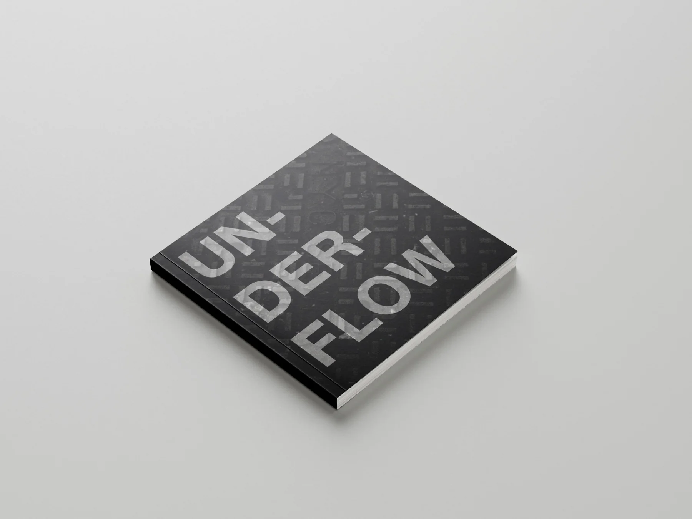
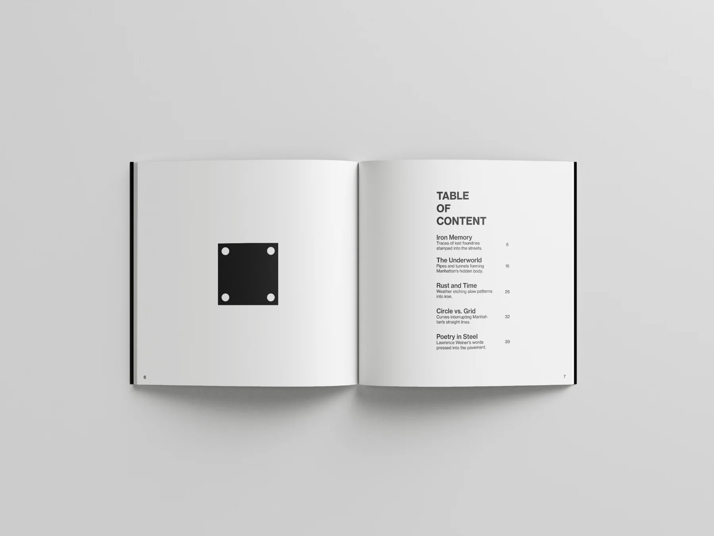
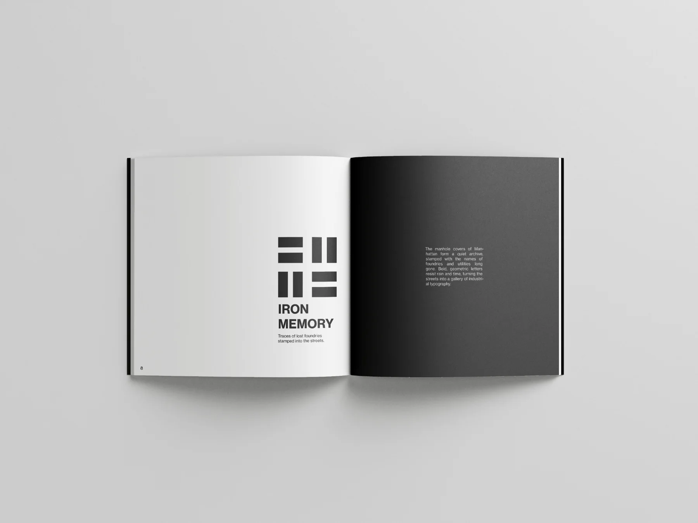
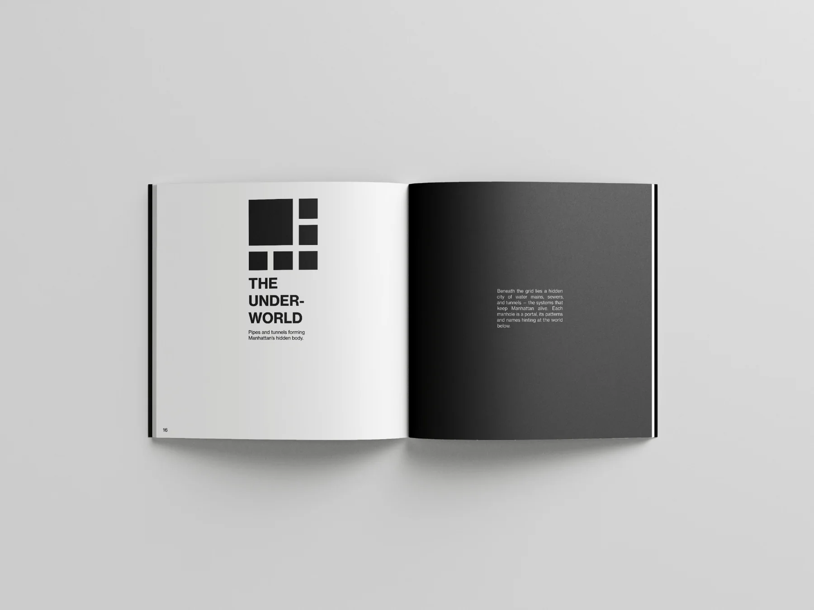
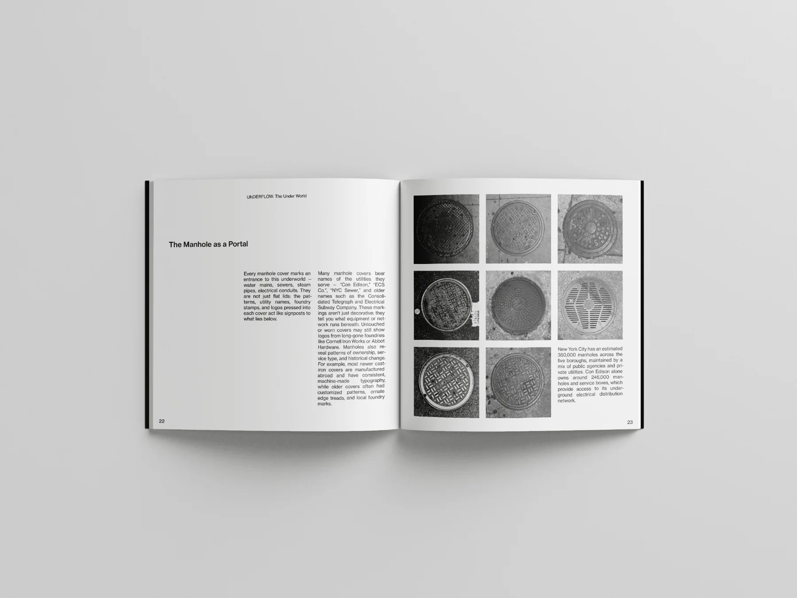
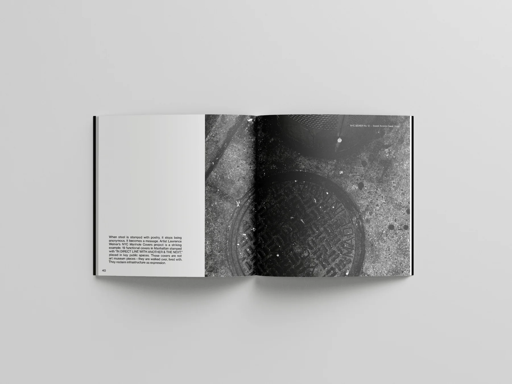
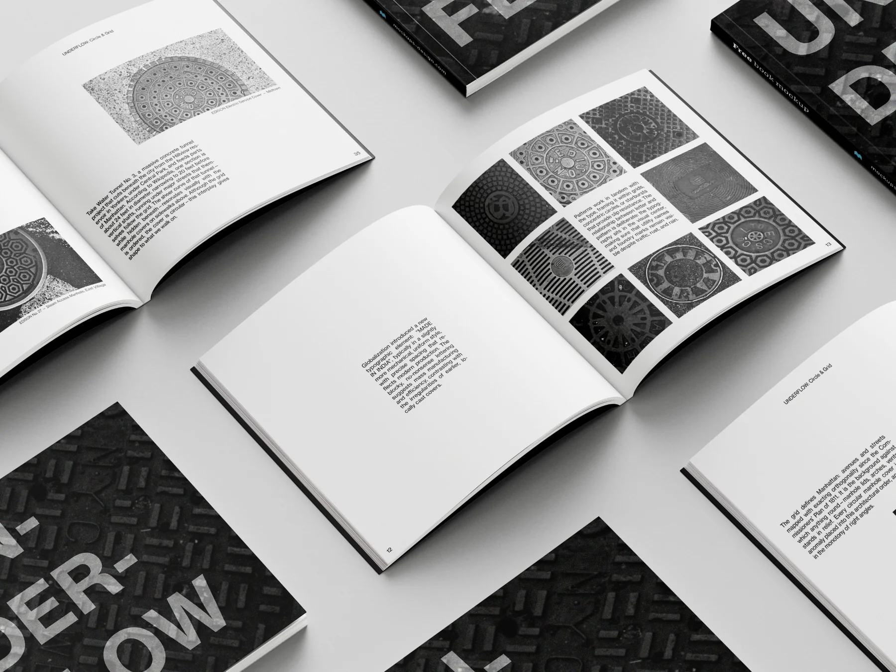

WANG
WANGUNDER
FLOW.
A visual investigation of New York City's manhole covers — uncovering the patterns, hidden infrastructure, and overlooked typography beneath our feet.

The city beneath the city.
UNDERFLOW is an editorial exploration of New York City's manhole covers as overlooked artifacts of urban design. Their surfaces carry symbols, foundries, grids, and signs of the underground networks that make the city function.
The project translates this research into a monochrome publication, then extracts geometric elements from manhole patterns to develop a motion poster — moving from found street details to a new visual language.
A hidden visual archive.
Bold letterforms, black-and-white images, and a restrained grid connect material textures with the invisible systems under the street.






Patterns in motion.
Geometric motifs extracted from the manhole covers become a moving visual system. The motion poster extends the book's research beyond the printed page.
Play the original motion poster on the right. Sound can be enabled with the video controls.